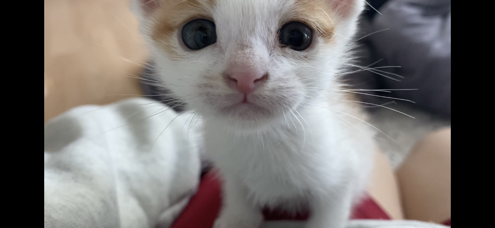
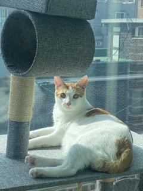
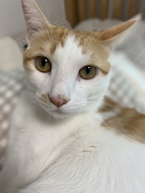
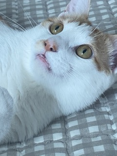
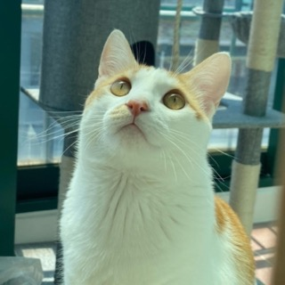
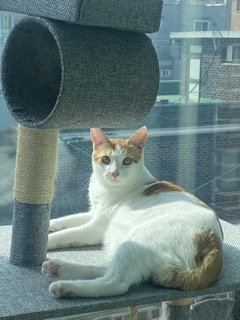
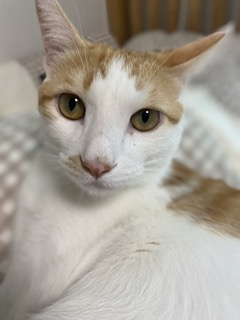
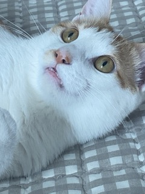
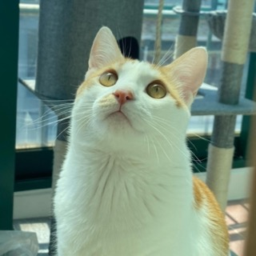

안녕하세요! 멋쟁이사자처럼 11기 프론트 엔드 김정주입니다.
코딩이 처음인 코린이입니다. 열심히 하겠습니다:>!
KIM JEONG JOO
인도학과/Ai software
010-4041-8705
kjjeaus@gmail.com
안녕하세요! 멋쟁이사자처럼 11기 프론트 엔드 김정주입니다.
코딩이 처음인 코린이입니다. 열심히 하겠습니다:>!
My Kitty


 







이름:김로지
생일:2021년 4월생
성별:남자
별명:로지방구
TMI:태어난지 한달만에 입양되어 집에서 자란 집 고양희임돠!
그래서
싸가지가 매우 없지만 낯을 안 가리는 호기심 대마왕 임돠!
제 인생을 로지를 키우기 전과 후로 나뉨돠!
What I need
달달구리 아주 좋아함돠
눈이 슬퍼보이면 입에 당을 채워주세요 그럼
당연히 안 괜찮지만 괜찮은 척 합니다٩( ᐛ )و
공부할 때나 코딩할때 사운드클라우드 플레이리스트 필수임돠
올해 상반기는 귀멸의 칼날에 빠져서 이번 중간고사는 귀멸의 칼날 ost와
함께 했슴돠 ꒰⍣꒱
친구가 선물해준 젤리 비타민 아주 맛있슴돠
이제 저도 비타민이 필요한 나이가 된 것을 실감합니다. 20대 중반부터는
힐링포션이 선택이 아닌 필수 임돠
어떻게 알게 되었냐구요? 저도 알고 싶지 않았슴돠
저는 채식보다 고기파입니다. 그 중에서 장기류를 좋아함돠
맛이 있는건 왜 몸에 안 좋을까요 하지만 괜찮슴돠 저에겐 힐링포션이
있으니까요
지금까지 정말 별 볼일 없는 이야기 읽어주셔서 감사합니다